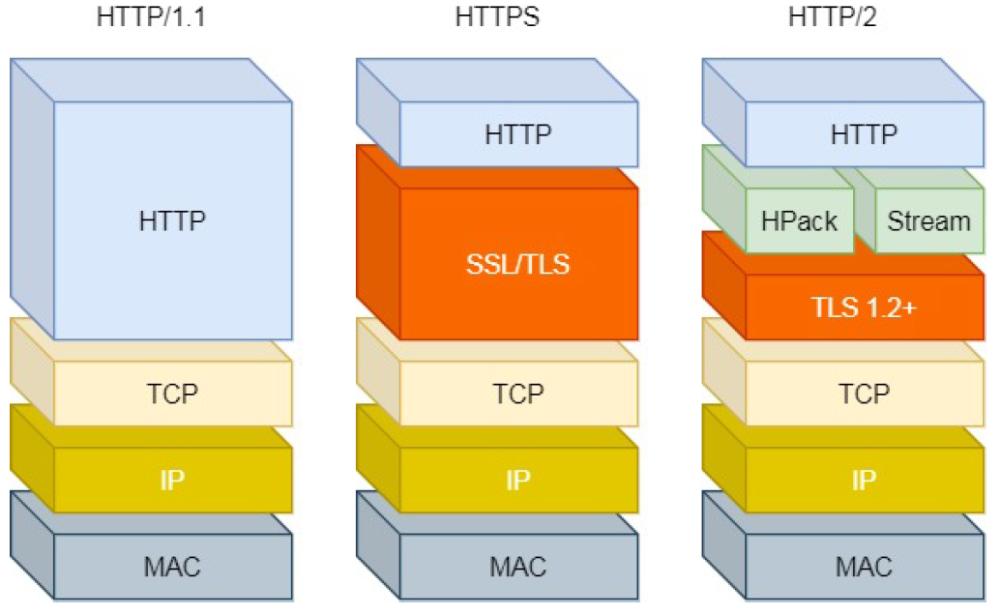
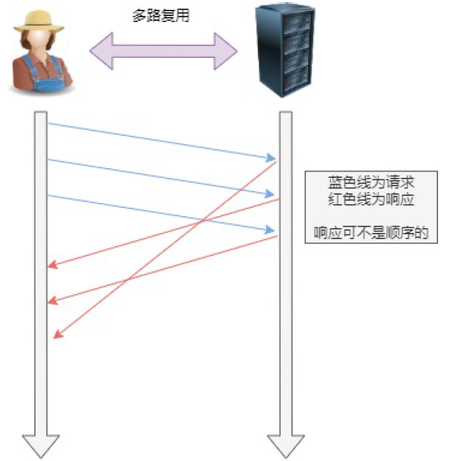
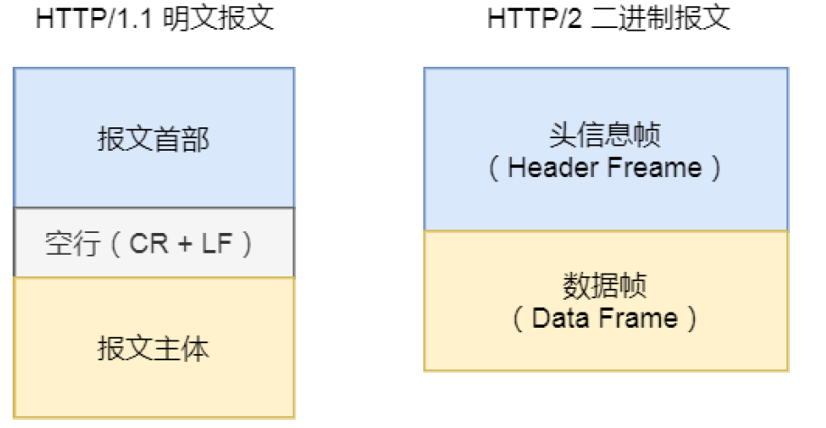
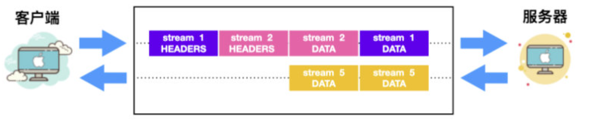
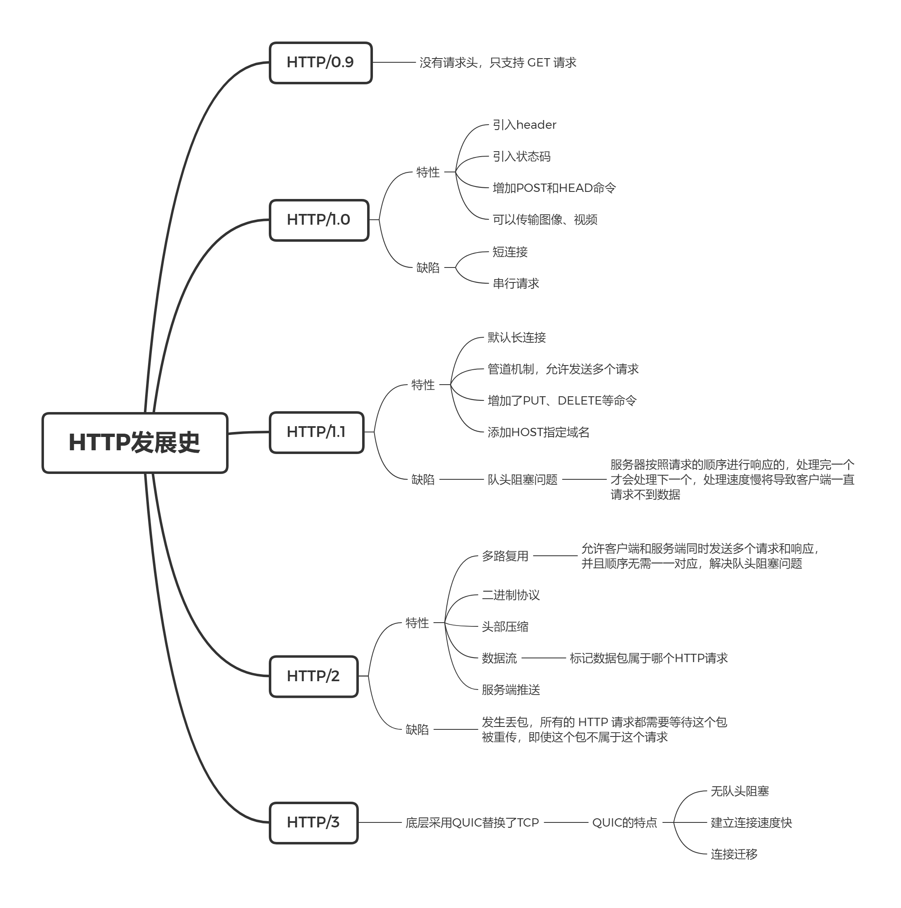

HTTP发展史
HTTP 基于 TCP 协议，默认端口是 80，HTTP 是 Web 世界中的基础协议，是现如今 Web 开发的必备知识，它也经历了多个版本的发展。
本文将介绍 HTTP 协议的发展历史。
1. HTTP/0.9
HTTP/0.9 在 1991 年发布，协议内容非常简单，没有请求头，只支持 GET 命令，然后没了。
2. HTTP/1.0
1996 年，HTTP/1.0 发布，拓展了不少功能：
- 除了
GET命令外，引入了POST和HEAD命令； - 添加了 HTTP header，请求和响应都有 header 了，并且在请求 header 中指明了 http 版本；
- 添加了状态码，例如 200，404 等；
- 可以传输图像、视频等，使用
Content-Type指明文件类型。
HTTP/1.0 极大拓展了 Web 世界的丰富程度，但也有一个主要缺点：每个 TCP 连接都只能发送一个请求。TCP 的连接需要三次握手，每次 HTTP 请求都得建立一个连接，速度较慢。除此之外，请求是串行的，每个请求必须等待上一个请求完成才可以发送。
为了解决 HTTP 短连接的问题，当时有些浏览器在请求时，会添加一个非标准的字段：
1 | Connection: keep-alive |
这个字段要求服务器不关闭 TCP 连接，以便请求复用，服务端同样会在响应中添加这个字段。
3. HTTP/1.1
1997 年，HTTP/1.1 发布，主要解决 HTTP/1.0 的网络性能问题，并增加一些新特性：
- 默认采用了长连接，减少 TCP 三次握手的开销。当需要关闭时，添加字段
Connection: close； - 引入了管道（pipeling）机制，在同一个 TCP 连接里，客户端可以发送多个请求。例如需要发送 A 和 B 两个请求，HTTP/1.0 中会先发送 A 请求，收到回应之后再发送 B 请求。在 HTTP/1.1 中，允许客户端同时发出 A 和 B 请求，但服务端仍根据请求顺序进行处理；
- 增加了
PUT、PATCH、OPTIONS、DELETE命令； - 添加了
HOST字段，指定服务器的域名；
虽然 HTTP/1.1 维持了长连接和引入了管道机制，提升了网络性能，但仍存在性能瓶颈：服务器按照请求的顺序进行响应的，处理完一个才会处理下一个，如果服务端响应慢，会导致客户端请求不到数据，这被称为队头阻塞问题。
4. HTTP/2
Google 开源了自行研发的 SPDY 协议，主要解决 HTTP/1.1 的性能问题，在 SPDY 的基础上，HTTP/2 在 2015 年发布。
HTTP/2 采用了 TLS，可以保证安全传输，除此之外，其主要特性有 多工、二进制协议、头部压缩、数据流和服务端推送。

多工
在一个 TCP 连接里，客户端和服务端可以同时发送多个请求或回应，而且不用按照顺序一一对应，可以解决队头阻塞问题，这被称为多工，也称多路复用。

二进制协议
HTTP/1.1 的 header 是文本，body 可以是文本或者二进制，而 HTTP/2 是彻底的二进制协议，header 和 body 都为二进制，称为头信息帧和数据帧。

头部压缩
如果发送多个请求，它们的头是一样或者类似的，协议会通过 HPACK 算法消除重复的部分。
HPACK 算法的思想是在客户端和服务器维护一张头信息表，所有的字段都会存在这张表中，相同的字段在后续不发送完整信息，而是发送表中的索引。
数据流
由于采用了多工，同一个连接里面连续的数据包，可能属于不同的响应，需要对数据包进行标记和区分。
HTTP/2 将每个请求或响应的所有数据包，称为一个数据流。每个数据流都有一个独一无二的编号，发送数据包时，必须携带数据流的编号。

服务端推送
服务端推送允许服务端未经请求，主动向客户端发送数据。
例如客户端请求 index.html，服务端在响应这个请求时，可以主动推送 main.js 文件到客户端的缓存，当客户端需要 main.js 时，从缓存中获取即可，不需要发送请求。
HTTP/2 的不足
HTTP/2 为了解决队头阻塞问题，引入了多工，多个 HTTP 请求在复用一个 TCP 连接，而这些对于 TCP 而言是无感知的。由于 TCP 的重传机制，如果发生丢包，所有的 HTTP 请求都需要等待这个包被重传，即使这个包不属于我这个 HTTP 请求。
5. HTTP/3
HTTP/2 的重传问题使用 TCP 是无解的，但是 UDP 可以，于是 HTTP/3 将底层的 TCP 协议改为基于 UDP 的 QUIC 协议。
QUIC 是 Google 设计的基于 UDP 的可靠协议，拥有以下特点：
- 无队头阻塞。QUIC 也采用了数据流，流之间相互独立，由于 UDP 没有重传机制，即使发送丢包，只会阻塞包对应的流；
- 建立连接速度快。HTTPS 建立一个连接，需要 6 次交互，而 QUIC 将其合并到 3 次；
- 连接迁移。QUIC 取消了（源地址，源端口，目标地址，目标端口）的四元组，而是采用 connection id 来标识一个连接，只要保留上下文，即使网络发生变化，也可以复用该连接。例如设备从 4G 切换到 WIFI，连接不会中断。
HTTP/3 采用 QPACK 替换 HPACK 实现头部压缩，目前看来，HTTP/3 主要涉及底层协议改造，在业务逻辑层面并没有太大变化。但也因为改动了底层协议，HTTP/3 的普及还是一个较为长久的过程。
6. 总结
